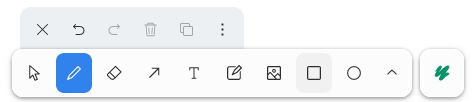
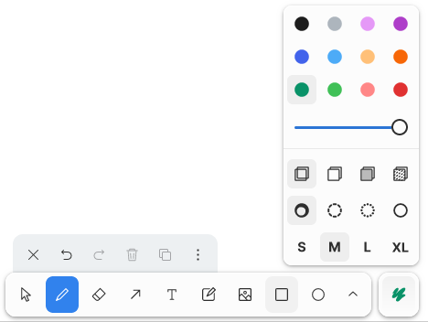

A drawing tool for Reveal.js based on tldraw
Press D or double click to enter drawing mode.
Drawing mode starts with the pencil by default. You can pick a different tool from the toolbar.
Use the style menu right of the toolbar to choose colour, line thickness etc.
Existing annotations can be erased or changed. Use the Select tool to pick a shape and try changing its color.
To hide the drawing UI and return to normal interaction with the slides, press Escape or use the ⨯ button in the action bar.
Press V to toggle visibility of all drawings on the slide.
npm install tldreveal react react-dom
// Import the Tldreveal plugin
import { Tldreveal } from "tldreveal"
// Import the tldreveal CSS (if you use a bundler that can import CSS)
import "tldreveal/dist/esm/index.css"
// Initialize Reveal.js with the Tldreveal plugin
Reveal.initialize({
// tldreveal does not support scroll view
scrollActivationWidth: undefined,
plugins: [ Tldreveal ]
})
Requires setting the id or data-tlid attribute on the reveal container to a unique identifier of your deck.
Uses the id or data-tlid attribute to identify each slide.
Slides with the same data-tlid attribute share the same drawings.
Such as this one.
Use the menu in the top-left corner when in drawing mode.
This presentation uses it!
Use the top-left menu to clear the current slide or the entire deck.
It's not perfect.
Scroll view changes a lot about the structure behind the scenes and is thus incompatible with tldreveal.
Your presentation may be longer, but you can draw only on 40 of your slides. This is a limitation from tldraw.